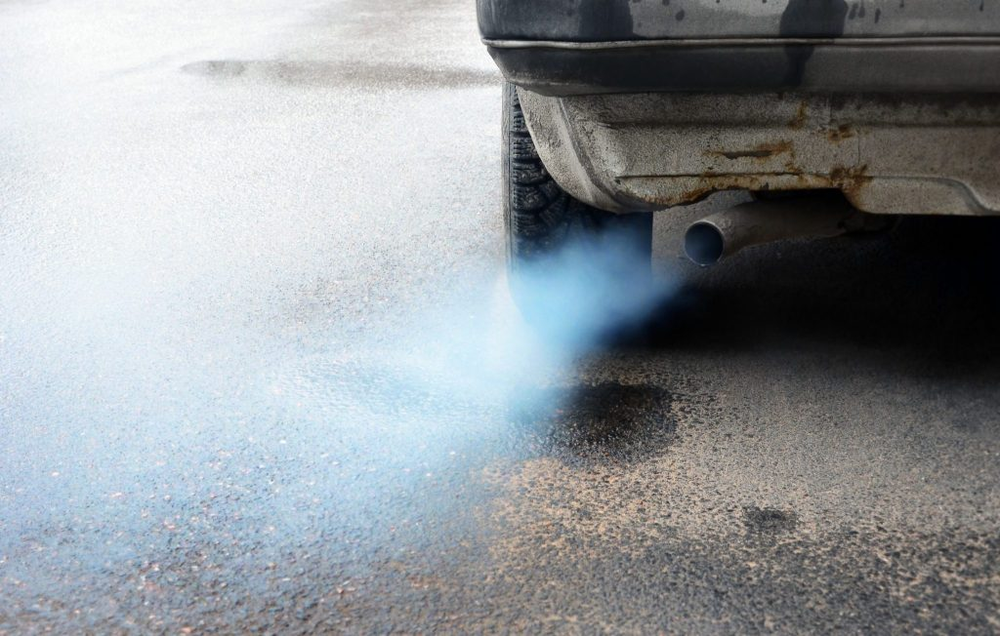

Air pollution from vehicles poses significant environmental, public health and socioeconomic challenges. As vehicles emit various pollutants into the atmosphere, they contribute to a number of adverse effects on urban and rural areas.
Health Risks:
Air pollution from vehicles is a major contributor to respiratory disease, cardiovascular disease and premature death among exposed populations.
Environmental Degradation:
Vehicle emissions contribute to environmental degradation by contributing to smog formation, acid rain and ozone depletion.
Climate Change:
Carbon dioxide (CO2) emitted from vehicles contributes to global warming and climate change by trapping heat in the atmosphere and altering the Earth's climate system.
Improving public transport systems, including buses, trains and mass transit networks, to provide affordable, accessible and reliable alternatives to private car ownership.
Conduct regular vehicle inspections and emissions tests to ensure compliance with emissions regulations and reduce emissions from older, more polluting vehicles.
Create walkable, bikeable and transit-friendly communities to reduce dependence on private cars and promote sustainable mobility.